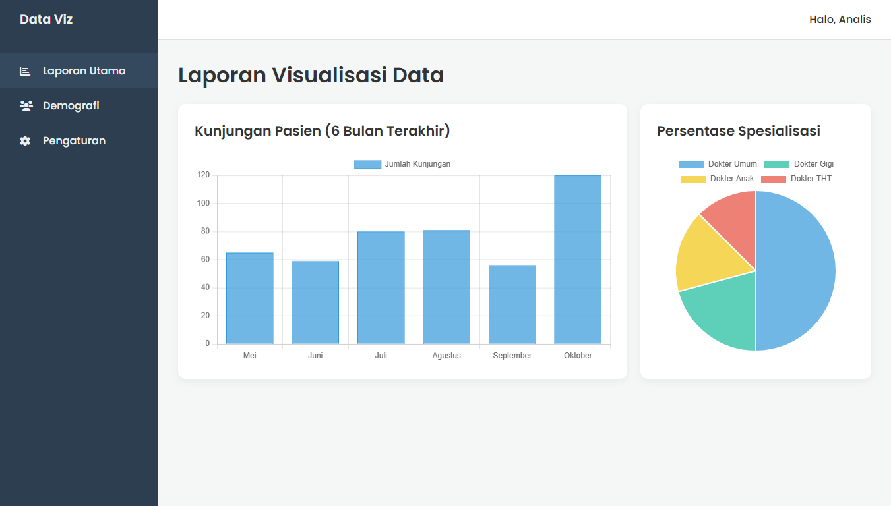

Template Laporan (Chart.js)
Tentang Template Ini
Ini adalah template "standar profesional" yang fokus pada **visualisasi data**. Halaman ini menunjukkan cara mengintegrasikan library JavaScript pihak ketiga (Chart.js) untuk membuat grafik yang bersih, interaktif, dan modern.
Template ini sangat ideal untuk halaman "Laporan" atau "Analytics" dalam sistem informasi apa pun, di mana data mentah perlu disajikan dalam format visual yang mudah dipahami oleh manajer atau admin.
Fitur Utama:
- Layout Dashboard Lengkap (Header, Sidebar, Konten)
- Integrasi Penuh dengan Chart.js
- Contoh Grafik Batang (Bar Chart) interaktif
- Contoh Grafik Lingkaran (Pie Chart) interaktif
- Struktur Kartu (Card) untuk membungkus grafik
- Layout Konten Responsif (Grafik menumpuk di layar kecil)
- Struktur CSS yang bersih dan mandiri (mudah diadaptasi)
Teknologi yang Digunakan:
- HTML5
- CSS3 (Grid, Flexbox)
- Vanilla JavaScript (untuk inisialisasi grafik)
- Chart.js (via CDN)
- Font Awesome (Untuk Ikon)